Learning from One Demonstration. Humans quickly adapt their motions to the functional demands of unseen tasks, generalizing across objects and spatial configurations from a single demonstration. Can robots do the same, without large-scale datasets? We propose SNAP, a framework that achieves spatial and object generalization for complex, functional dexterous tasks from a single human demonstration using functional grasping policies.
Abstract
Achieving human-level generalization across unseen objects and spatial configurations remains a central challenge in robotics. While such generalization is frequently enabled by training on large-scale teleoperation datasets, synthesizing training data from a small number of episodes has emerged as a promising direction to reduce the burden of data collection. In this work, we present SNAP, a framework that achieves spatial and object generalization for complex, functional dexterous tasks using only a single human demonstration. We train a low-level grasping policy conditioned on four signals: grasp template, segmented point cloud, wrist orientation, and keypoint. We then utilize this policy to augment the grasp trajectory of a single real-world demonstration with diverse object geometries and poses. We evaluate our data augmentation approach on three challenging real-world tasks (pen writing, mug on peg, dispense syringe) and validate our functional grasping policy extensively in simulation.
Functional Grasping
15 grasps | 6 objects
Success Rate: 9 / 15
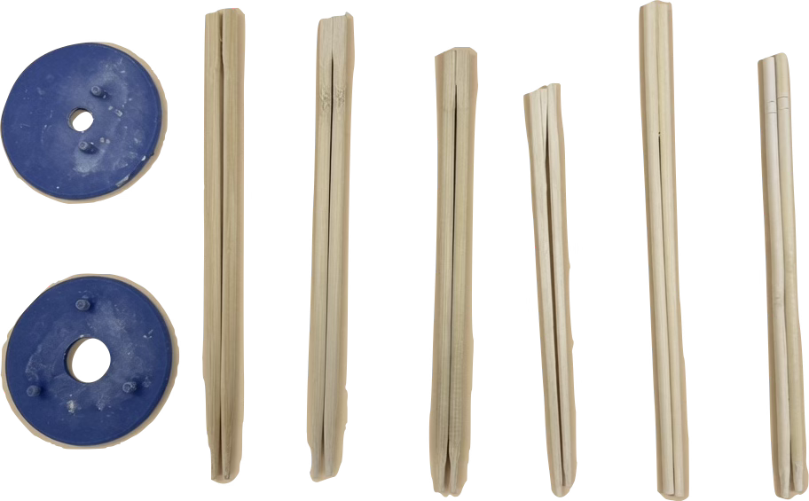
36 grasps | 32 objects
Success Rate: 33 / 36
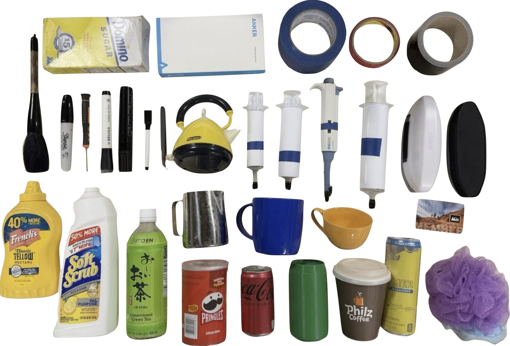
10 grasps | 10 objects
Success Rate: 10 / 10
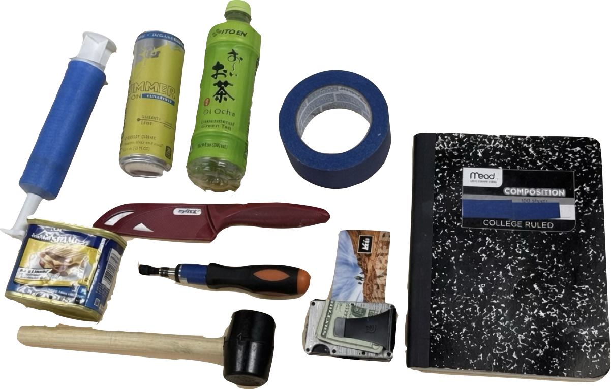
Grasp Conditioning
Learning from One Demonstration
Paper
SNAP: One-Shot Dexterous Manipulation via Functional Grasping PoliciesAnonymous Authors
13 pages
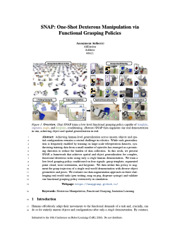
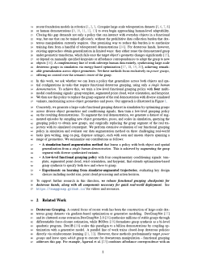
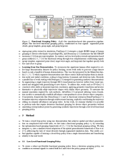
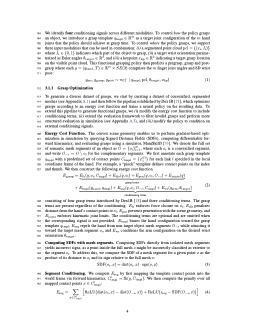
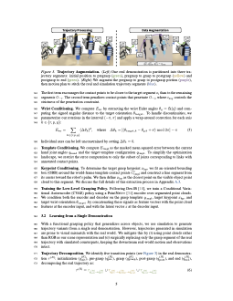
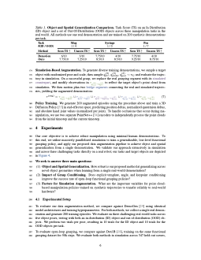
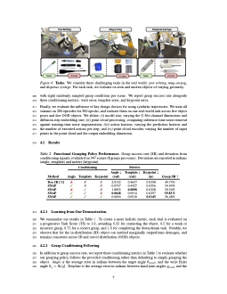
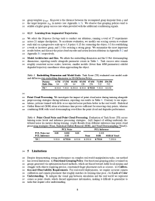
Citation
If you find our work useful, please consider citing the paper as follows: